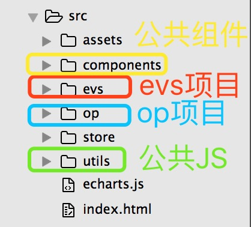
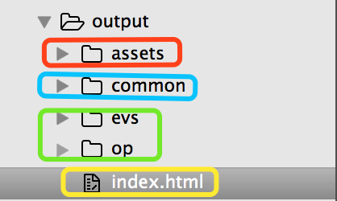

之前关于webpack的配置都是用在单项目中，最近有个需求就是将两个相近的项目要整合成一个工程，抽取公共组件、公共js、公共css等等，同时要方便后面项目的扩展。这时，就要对构建工具webpack进行重新配置，以便达到后面新增项目进来仍不需更改webpack配置文件的效果。
下面是最后想要的工程目录：

- 现在有OP/EVS项目，后续可能还会添加其他的项目进来
- 项目的公共组件放在
components目录下，公共js放在utils目录下，公共样式和图片放在assets目录下 - 根据我们配置文件，我们访问OP项目的路径是
127.0.0.1:8010/op/，EVS项目的路径是127.0.0.1:8010/evs/
附上我们的webpack配置文件的代码：
|
|
打包编译后的文件目录如下：

common目录放的是公共的css/js，assets目录下放的是图片，op目录下放的是op项目的代码，evs目录下放的evs项目的代码，index.html是工程根目录下的页面- 其中
evs/op项目下都有自己的index.html文件
webpack.json中的命令
webpack-dev-server --hot --inline完成自动刷新- 默认是根据webpack.config.js打包文件，通过
--config xxxx.js修改 - 根目录中去查找内容，通过
--content-base可以配置根目录。如webpack-dev-server --hot --inline --content-base './build/'，在build文件夹中去加载index.html，如果没index.html文件，将会在浏览器中显示所有build目录下的文件和文件夹
部分属性的配置
resolve的定义
alias别名(alias)的定义
|
|
extensions对象，使得开发过程中文件资源的处理可以忽略后缀
|
|
externals配置
- 不需要打包的模块
|
|